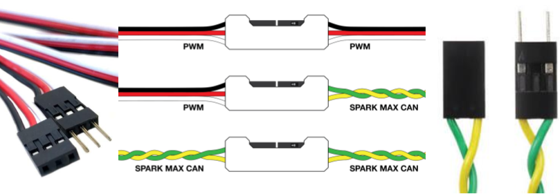
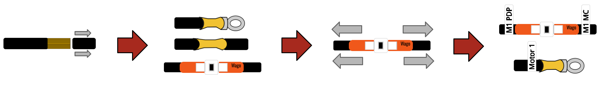
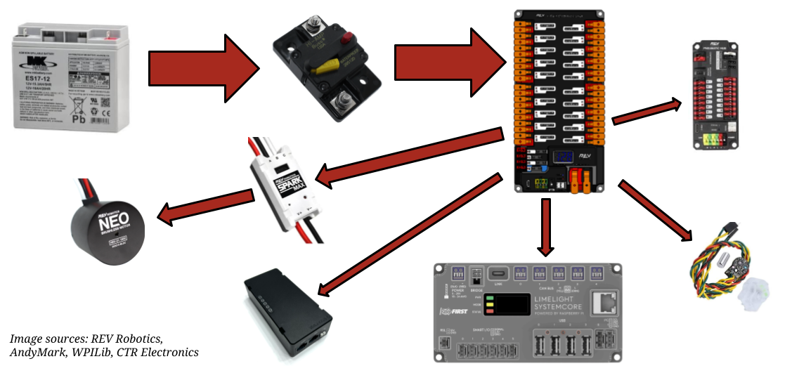

Electronics Training Module

Above is an example of a fully wired FRC robot system. This module will take you through all the major components and the basics of wiring.
Click a component to learn more.
Image sources: REV Robotics, AndyMark, WPILib, CTR Electronics
Mount parts where they can survive and be serviced
Protected
Keep electronics away from direct impact zones, game pieces, metal chips, and moving mechanisms.
Accessible
Leave room for hands, tools, connectors, status lights, and replacement parts.
Firmly Mounted
Use a belly pan or electronics panel with bolts, rivets, or strong mounting hardware.
A clean robot is not the same as a reliable robot. Reliability comes from secure mounting, protected routing, good connections, and clear documentation.
Do
- Use a dedicated electronics panel or belly pan.
- Use bolts, rivets, or strong mounting hardware.
- Keep electronics away from direct impact zones.
- Keep metal chips away from electronics.
- Keep fans, vents, ports, and status LEDs visible when possible.
Avoid
- Relying only on adhesive for critical electronics.
- Mounting electronics where game pieces or mechanisms can crush them.
- Hiding status lights behind panels.
- Mounting components where wires must bend sharply.
Main Breaker
The robot's primary shutoff must be easy to reach, clearly labeled, and protected from accidental impact.
Battery
The battery must be firmly secured so it cannot fall out, pull wires loose, or shift during impacts.
Robot Signal Light
The light must be visible from all sides and scurely attached.
roboRIO/SystemCore
By far the most important component on the robot, it should be kept in a covered area and kept from debris and impact.
Radio
The radio should be away from motors and mounted high out of enclosed metal areas.
PDP
The PDP should be located near the battery and all the breakers and outputs should be accessible.
Wire Choice and Connections Matter
Material
Know what the wire is made of. Most robot wiring uses copper conductors; use legal, appropriate wire for the circuit.
Gauge
Wire gauge must match the circuit current and breaker or fuse protection.
Connections
Wires can be connected in a variety of ways and those connections are often critical points of possible failure.
Rule of thumb: The larger the current, the more careful you must be about wire size, connections, strain relief, and protection.
In FRC, the connector type should match the current level, the device, and how often the connection may need to be serviced.

Anderson Connector
Used for the main robot battery connection. This is a high-current connector and is part of the robot’s main power path.
- Used on battery leads
- Must be crimped well
- Loose power connections cause major failures

PWM/Signal/CAN Connectors
Small 2 and 3 wire or specialized connectors used for CAN devices, sensors, and low-current connections.
- Carry signal and low power
- CAN wires are usually yellow/green twisted pair
- Easy to unplug if not secured with clips

Every crimp should survive a firm tug test. A connection that fails in your hand will fail faster on a moving robot.
Wires should be documented, labeled, and routed such that you can trace the main electrical path from the battery to the components on the robot.

If you can trace where power goes, you can troubleshoot it quicker.
Keep wires safe before the robot moves
Do
- Use the correct wire gauge for the circuit and breaker.
- Keep battery cables short, protected, and secured.
- Use strain relief so wires do not pull out during impacts.
- Protect wires with grommets or edge protection.
Avoid
- Chains, gears, belts, shooters, and intakes.
- Sharp metal edges and pinch points.
- Wires crossing pivots without slack or protection.
- Loose wiring near wheels or the floor.
Organize wiring so people can understand it
Traceable
Bundle wires neatly, but do not make them impossible to follow.
Labeled
Label both ends of important wires and use consistent wire colors.
Accessible
Keep electronics, motor controllers, status lights, and ports reachable.
Design for the pit: someone should be able to diagnose a problem under time pressure without cutting every zip tie off the robot.
Small wires still need protection
Mount firmly
A sensor that moves during a match gives bad data even if it is wired correctly.
Protect cables
Sensor wires are often small and easy to damage near arms, elevators, intakes, and game pieces.
Label inputs
Documentation helps programmers and pit students know which signal is which.
“The robot turned on” is not enough
A battery can power the robot in the pit and still be a poor choice for a match.
- Charge batteries properly.
- Label batteries.
- Track battery age and performance.
- Inspect battery terminals.
- Make sure battery lugs are tight.
- Cover exposed terminals.
- Use a proper battery cart or safe storage.
- Secure the battery firmly in the robot.
- Never allow the battery to fall out during a match.
- Retire weak or damaged batteries from competition use.
Fast questions before the robot leaves the pit
Charge
Is this battery fully charged and known to perform well under load?
Condition
Are terminals tight, covered, clean, and undamaged?
Retention
Is the battery fully secured in the robot before the match?
Use a systematic order
When a robot does not work, do not randomly unplug and replug things. Work from the simplest and most central checks outward.
Start with basics
Battery, breaker, roboRIO, radio, Driver Station connection, and motor controller power.
Then go deeper
CAN visibility, faults, brownout logs, mechanism motion, and what changed since it last worked.
Students should get comfortable using:
Driver Station Logs
Voltage, packet loss, brownouts, and match timing clues.
Status Lights
roboRIO, radio, and motor controller LEDs can quickly narrow problems.
Vendor Tools
REV Hardware Client or vendor tools for IDs, firmware, faults, and device status.
Multimeter + Load Tester
Verify voltage, continuity, and battery health instead of guessing.
Pass to complete the module
Each question is on its own slide.
Answer all 20 questions, then grade the quiz. Score at least 18 out of 20 to unlock the completion certificate.
Grade the quiz
You need at least 18 out of 20 to unlock the completion certificate.
Not submitted.
After passing, advance to the final completion certificate.